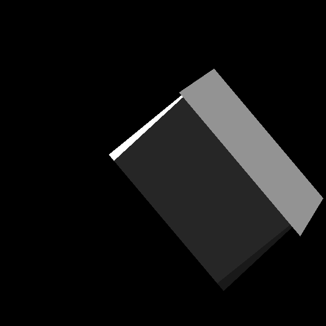

Jingchen Wu - cs184-aw
Connie Guo - cs184-dx
The ray tracer is an algorithm for generating 2D images of 3D scenes. The basic premise is this: cast a ray from the eye through the screen into the 3D scene, and see what it hits: what it reflects, and what color are the things it hits, and if what it hits is under a shadow, return the color, and draw that color onto the display device.
The way that reflections are done is this: When a ray hits a surface, trace another viewing ray from the point of intersection, in the direction of the reflected beam. This will be a recursive process that can end in one of a few ways: after a certain number of reflections, after the ray has been traced for a certain length, or after the amount of contribution of the reflection to the color of the object is below a certain amount. We chose to limit based on the number of reflections for simple implementation and controlled computation time. The default number of reflections is 1.
We chose the .obj file to be our format of triangle models due to its simplicity. Each .obj file is defined by a list of vertices (ex. v 0 0 0), and a list of faces, with the index of the vertex as its data (ex. f 1 2 3). Models are imported and parsed a parser into a model file in memory, and then rendered using the ray tracer. Spherical and ellipsoids are created with command line arguments instead of passed in through a file. They can then be transformed by the scaling, rotating, and translation functions.
Our ray tracer takes in the following params:
| -reflect f | Proportion of light that is reflected off of a surface |
| -numReflections i | Number of times the light is bounced around before it stops |
| -ambient f | Ambient constant to add to the overall brightness |
| -specular f | Specular power constant for the size of specular highlights |
| -pl x y z r g b | Add a point light source at [x,y,z] with color (r,g,b) |
| -dl x y z r g b | Add a directional light source at [x,y,z] with color (r,g,b) |
| -sphere x y z r | Add a sphere at x y z with radius r |
| -file filename.obj | Import a model from a .obj file |
| -scale xscale yscale zscale | Scale everything in the defined directions |
| -translate x y z | Move everything by [x,y,z] |
| -rotate xaxis yaxis zaxis | Rotate by each axis in radians |
| -output image.png | Export the rendering as an image instead of drawing on a window |
| -width i | Output width of the result image |
Here are some result images of our rendering program:
|
Rendering a basic sphere ./render -sphere 0 0 0 0.5 -dl -1 -1 1 1 1 1 2882ms |
Rendering a basic .obj file ./render -file models/triangle.obj -dl -1 -1 1 1 1 1 29163ms |
Phong shading with colors ./render -sphere 0 0 0 0.5 -dl -1 -1 1 0 1 0 -dl -1 1 1 0 0 1 -dl 1 1 1 1 0 0 3853ms |
|
Shadows from 3 point lights ./render -sphere -0.5 0 0 0.25 -sphere 0.5 0 0 0.1 -pl 2 0 0 1 0 0 -pl 2 0.1 0 0 1 0 -pl 2 -0.1 0 0 0 1 3063 |
Demonstration of reflections ./render -file models/mirror.obj -sphere 0 0 0 0.25 -numReflections 10 -dl -1 -1 1 1 1 1 17931ms |
Point light sources ./render -file models/mirror2.obj -pl 0.05 0 -0.05 0 1 0 -pl 0.6 0 -0.7 1 0 0 6972ms |
|
Linear transformations  ./render -file models/mirror.obj -dl -1 -1 1 1 1 1 -scale 0.5 1.2 1 -rotate 0 0.7 0.7 -translate 0.5 0 0 5762ms |
Ellipsoid ./render -sphere 0 0 0 0.5 -scale 1 3.4 1 -kd 1 1 0 0.7 0.2 0.4 28s |
Teddy bear ./render -file models/teddy.obj -dl -1 -1 1 1 1 1 -scale 0.04 0.04 0.04 -rotate 0 1.57 0 49.79min |
We did not use the eigen library for most of our renderings (with the exception of the ellipsoid, which we did at the end). Instead we wrote our own primitives from scratch. Because of this, most of our computations were rather sluggishly slow. All of the renderings were done on a single core of 3.2Ghz.